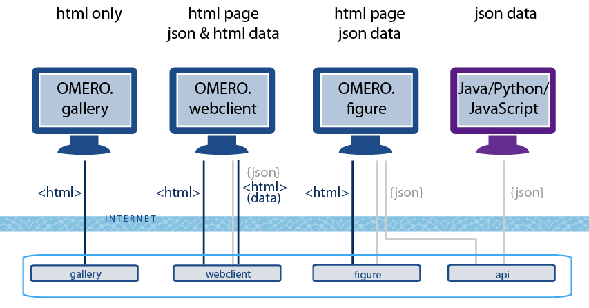
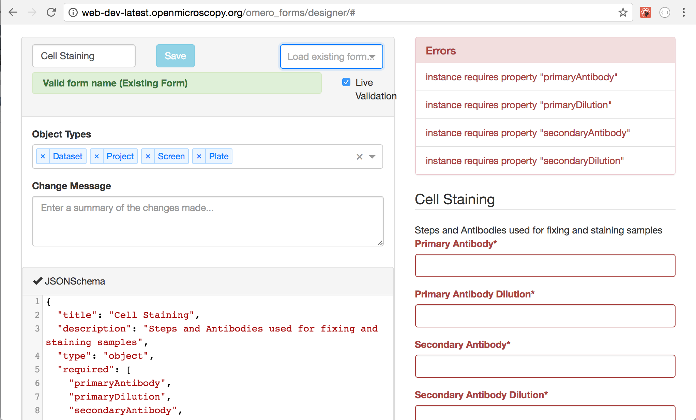
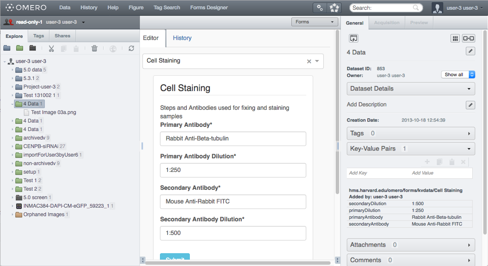

OMERO.web for developers
OME Meeting, Dundee 2017
Will Moore | Jean-Marie Burel
Outline
- The OMERO.web framework
- JSON api
- Example apps
- Extension points: top-links, webclient-plugin, open-with
- App installation via PyPI
- Decoupling of OMERO.web deployment
- Getting Started
OMERO.web framework

OMERO.web documentation
OMERO.web apps
JSON API app
- ✔ Access JSON API from language of choice: Java, Python, JavaScript, Matlab etc
- ✔ Don't need ICE
- ✔ Not tied to specific version of OMERO
- ✔ Installed by individual users (instead of sysadmin)
- ✔ Developers don't need to install OMERO.web
- ✘ Currently limited API coverage
- ✘ May be less performant than ICE for large queries?
- ✘ Stateless only. No stateful services
JSON API
- OMERO.web app
/api/ - JSON generated by omero-marshal from OMERO.model objects
- Login via POST to
/api/v0/login/ - 5.3.0 supports GET Project, Dataset, Image, Screen, Plate, Well
- 5.3.2 adds GET ROIs and Shapes
- Can Create, Update and Delete Projects, Datasets & Screens only
- Doesn't use jsonp (webgateway does). Use CORS instead
- Urls included in JSON to facilitate exploring in browser
- See JSON API docs
JSON API in the browser

JSON API with Python
import requests
session = requests.Session()
# Set CSRF token
token = session.get("http://server.org/api/v0/token/").json()['data']
session.headers.update({'X-CSRFToken': token,
'Referer': "http://server.org/api/v0/token/"})
# Login
session.post("http://server.org/api/v0/login/", data={'username': USERNAME,
'password': PASSWORD,
'server': 1})
# List Projects
rsp = session.get("http://server.org/api/v0/m/projects/").json()
for p in rsp['data']:
print p['@id'], p['Name']and JavaScript (with CORS)
JSON Login via CORS
webgateway API
- Json data: e.g. Image json webgateway/imgData/<imageId>/
-
Image rendering: webgateway/render_image/<imageId>/<z>/<t>/
App examples
- Ship with OMERO.web:
- webgateway | webclient | webadmin | api
- External apps:
- OME projects:
- OMERO.figure |
OMERO.iviewer |
OMERO.mapr (used by IDR)
- OMERO.figure |
OMERO.iviewer |
- Examples & Prototypes:
Custom Repos
OMERO.gallery
- HTML pages generated via Django templates
- Suitable for mobile devices
- Prototype / example app (not actively developed)
Example: Liverpool CCI OMERO Gallery
OMERO.figure
figure.openmicroscopy.org
Demo
OMERO.iviewer
- First release 0.1.0 on 25th May 2017
- Uses aurelia js framework with Open Layers
- Loads data via /api/ and /webgateway/ urls
- Developed by Harald Waxenegger. See: omero-iviewer
OMERO.mapr (IDR)
- Extends webclient Django-based pages
- Many custom API queries of map annotations
- IDR uses the Public user to allow auto-login via OMERO.web
- See: omero-mapr
OMERO.webtagging
- Auto-tag: Add Tags to Images based on file path
- Tag-searcher: Filter data by series of Tags
- Douglas Russell (Micron, Oxford) See: OMERO.webtagging

OMERO.forms
- Create forms to validate metadata input
- Douglas Russell (Sorger Lab, HMS). See: OMERO.forms


3rd party viewers
-
CATMAID
loading image data via
OMERO-CATMAID
by L'École polytechnique

-
FPBioimage 3D viewer from
Laser Analytics Group, Cambridge
packaged as OMERO-FPBioimage by OME

Webclient plugins
- Links and hooks to access apps from webclient
- See Linking from webclient and webclient plugin docs

Open With...
$ bin/omero config append omero.web.open_with '["omero_iviewer", "omero_iviewer_index",
{"supported_objects":["image"], "script_url": "omero_iviewer/openwith.js"}]'
// openwith.js
OME.setOpenWithUrlProvider("omero_iviewer", function(selected, url) {
// Add image Id to url
url += selected[0].id + "/";
// We try to traverse the jstree, to find parent of selected image
var inst = $.jstree.reference('#dataTree');
var parent = OME.getTreeImageContainerBestGuess(selected[0].id);
url += '?' + parent.type + '=' + parent.data.id
return url;
});
Open with from OMERO.figure

App JavaScript frameworks
| gallery* | mapr | figure | iviewer | player* | webtagging | forms | |
| JS | - | jQuery | Backbone | Aurelia | React | React | React |
|---|---|---|---|---|---|---|---|
| Build tool | - | - | Grunt | Webpack | Webpack | Webpack | Webpack |
| pip install? | ✔ | ✔ | ✔ | ✔ | ✔ | ✔ | ✔ |
*prototype app
App installation via PyPI
- Make OMERO.web apps "pip installable"
- Easier to deploy in CI environment for testing
- Easier for users to install
$ pip install omero-iviewer
$ bin/omero config append omero.web.apps '"omero_iviewer"'Decoupling of OMERO.web deployment
- OMERO.web installed on different machine / environment from OMERO.server
- Use virtualenv to control Python version & dependencies
- Independent deployment & testing
- See OMERO.web deployment docs
Getting Started
See OMERO.web developer docs | Creating an appSummary
- Try installing some apps
- Create your own apps and share!
Thank you